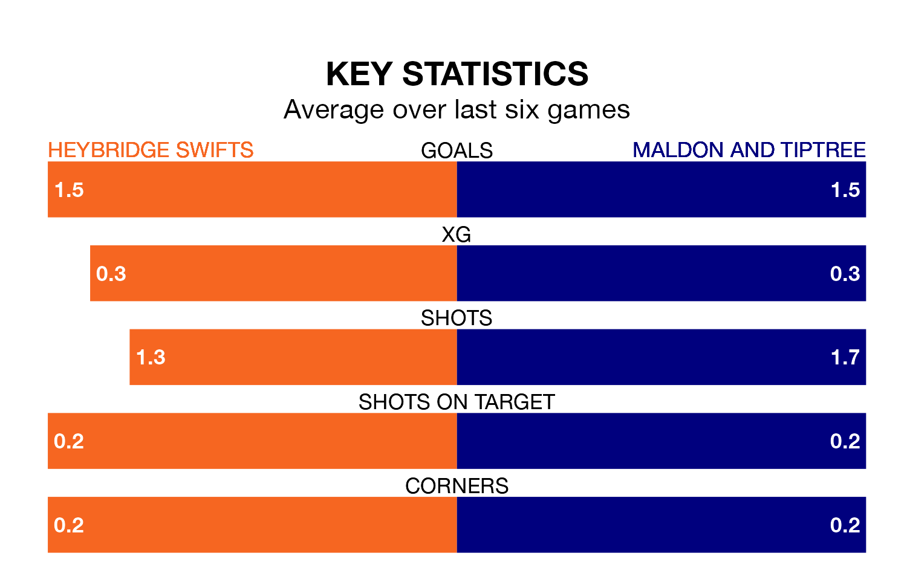

Maldon and Tiptree travel to Heybridge Swifts on Monday in the Isthmian League Division One North.
The visitors come into the game on the back of a win in their last match, having beaten Enfield 1893 1-0 away.
Heybridge Swifts also won their last match, 2-1 against New Salamis.
With 45 goals in 23 games so far this season, Maldon & Tiptree are scoring more than average in the league with 2.0 goals per game. And they are conceding fewer than average, letting in 36 goals at a rate of 1.6 per game.
Heybridge Swifts are also above average scorers, with 1.8 goals per game, compared to a league average of 1.7. They have conceded 1.2 goals per game.
The home side are sixth in the table after 24 games, of which they have won 13 and drawn five, earning 44 points.
The Jammers are two places behind Heybridge Swifts in eighth, with 12 wins and three draws putting them on 39 points.
In the last five years, Heybridge Swifts and Maldon & Tiptree have played each other on five occasions. Heybridge Swifts won three of them and Maldon & Tiptree two.
On average, Heybridge Swifts scored 2.0 goals and the Jammers 1.6 in those matches.
Their last meeting was on December 26, when Heybridge Swifts won 3-1 away.
Heybridge Swifts are in mixed form in the Isthmian League Division One North, with two wins and two draws from their last six games.
With four wins and two losses over that period, the visitors' form is better – they have taken 12 points from 18, compared to the hosts' eight.
Updated: 10:31 (UTC), 31/03/24